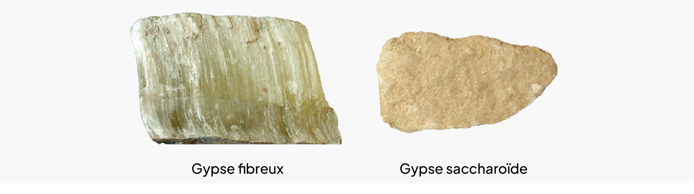
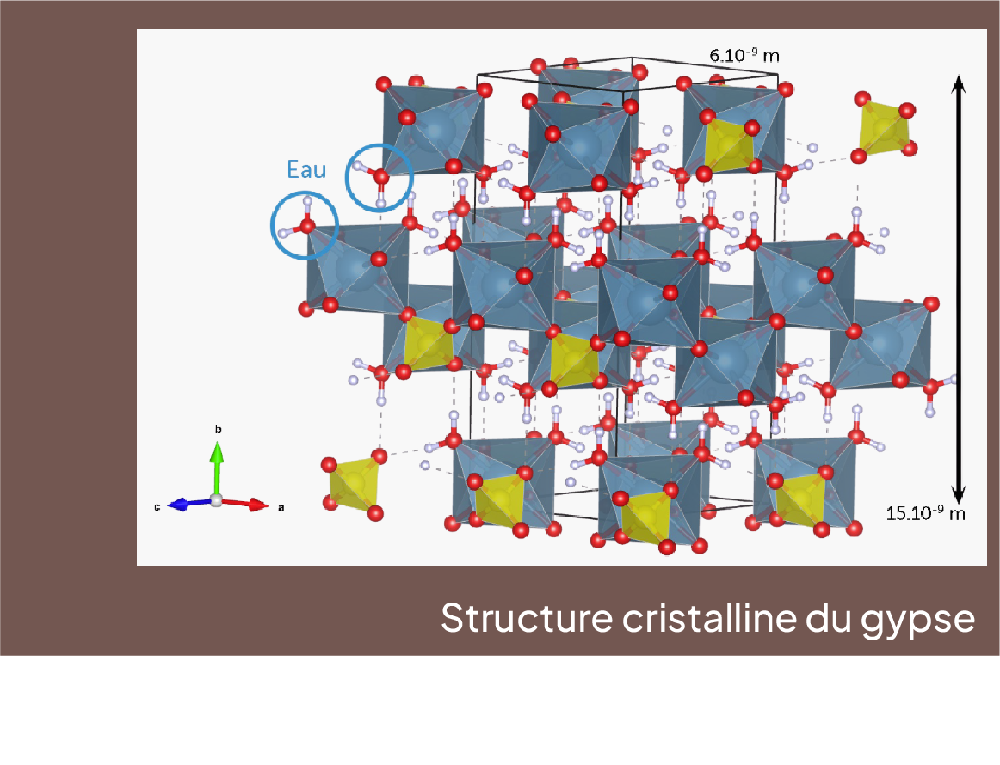
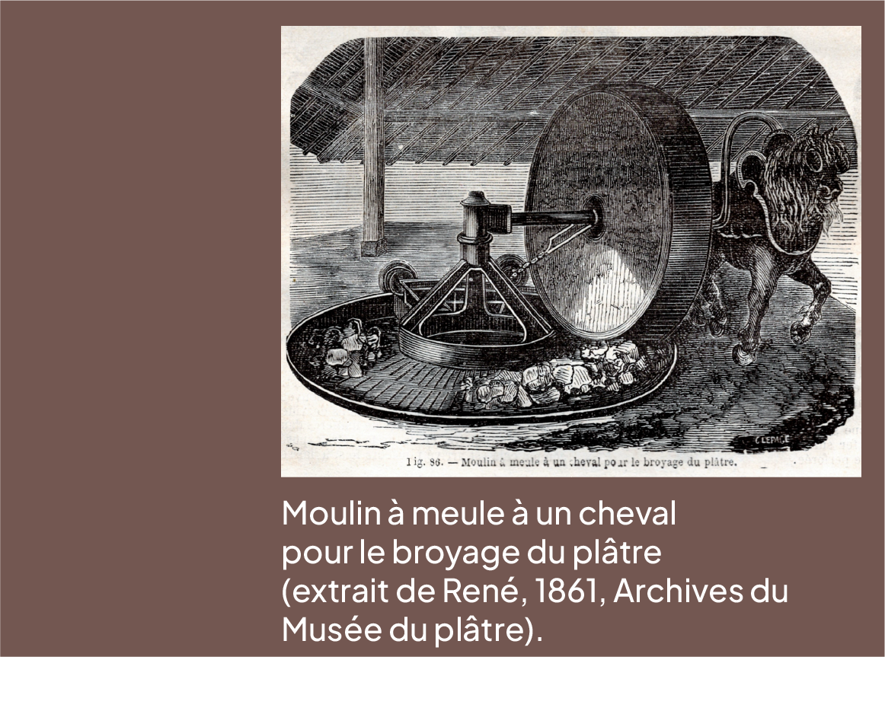
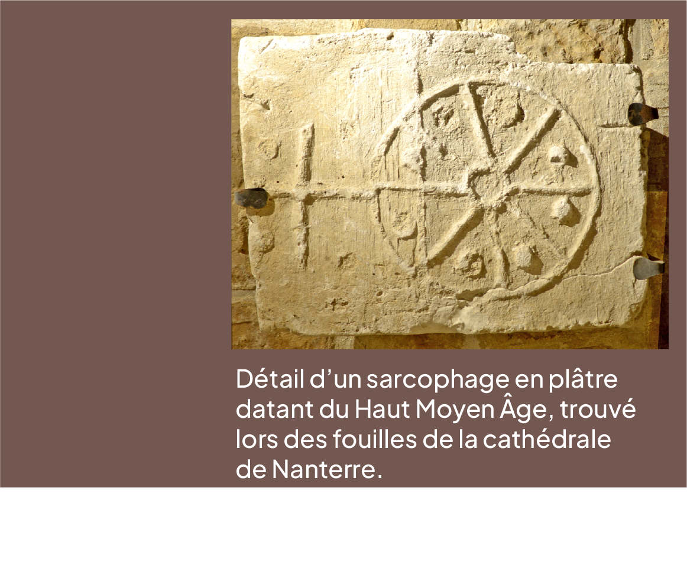
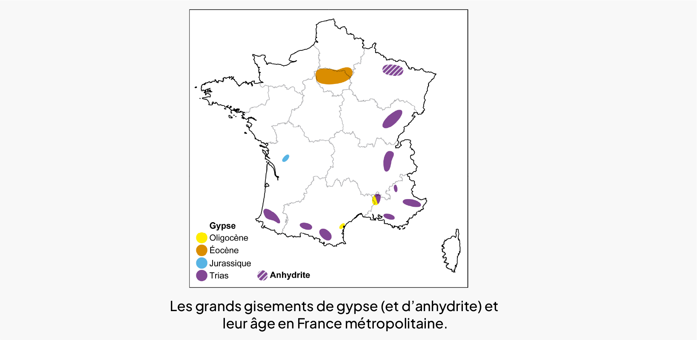

• Métamorphoses de la matière
Il y a presque 10 000 ans, en ces temps lointains où l’humanité s’initiait à l’agriculture puis à l’élevage en complément de la chasse, de la pêche et de la cueillette, se développaient aussi les arts du feu, notamment la céramique puis, plus tard, la métallurgie.
Le gypse, une pierre qui grille au feu
Les plus anciennes traces d’utilisation du plâtre remontent au VIIIe millénaire avant J.-C., au Proche-Orient, notamment dans la ville de Çatal Höyük, dans le centre de la Turquie, où les murs en brique étaient recouverts de plâtre.

En 2800 avant J.-C, les Égyptiens ont également utilisé du plâtre comme liant pour jointoyer les pierres de la pyramide de Kheops à Gizeh. Travaillé avant de durcir ou moulé, seul ou avec d’autres matériaux, le plâtre se métamorphose en décoration et œuvre d’art.
De l’eau au cœur du minéral
Le gypse est un minéral hydraté, c’est-à-dire que la molécule d’eau est incluse dans sa structure cristalline, où elle compte pour 20% du poids du minéral.
Le gypse cristallise selon une maille monoclinique ; l’une des sept catégories de classement des cristaux dans l’espace tridimensionnel. Les liaisons entre les ions Ca2+ et SO 42- sont fortes et dues aux échanges d’électrons.
Tandis que les liaisons des molécules d’eau avec les autres atomes sont électrostatiques. Les molécules d’eau s’organisent ainsi dans un plan cristallographique qui constitue une zone de fragilité du minéral qu’on appelle un plan de clivage.

Métamorphose réversible
La poudre de plâtre se dissout dans l’eau (9,08 g par litre d’eau à 20°C) pour ensuite s’épaissir et finir par durcir en dégageant de la chaleur.
C’est le chimiste Antoine Lavoisier qui, vers 1764, explique le mécanisme de la prise du plâtre, montrant que le matériau réincorpore l’eau perdue lors de la cuisson pour reformer du gypse lors de la phase de solidification.
La transformation du gypse en poudre de plâtre est donc une métamorphose réversible en somme.

Le blanc de Paris
Le 18 Août 1667, une ordonnance de Louis XIV oblige à enduire les boiseries intérieures et extérieures des habitations pour éviter à la capitale le sort de Londres, grandement détruite lors de l’incendie de 1666.
La ville se pare alors de façades blanches enduites d’un plâtre épais contenant souvent des grains de charbons de bois et des déchets de gypse.
Cette technique perdura jusqu’au milieu du XIXe siècle. Ainsi, le plâtre « ou blanc de Paris » acquiert sa renommée.
Une grande partie du bâti historique d’Île-de-France montrent encore des façades enduites en plâtre, souvent peintes ultérieurement, et fréquemment confondues avec des enduits de ciment ou de chaux.

Les gisements de gypse en France
Plus de 2,1 millions de tonnes de gypse ont été extraites en 2021 des différentes carrières de la région parisienne, soit 65% de la production nationale. Les couches gypseuses du bassin parisien se répartissent en quatre masses dont la plus récente et la plus épaisse -appelée première masse- est très pure.
Ce gypse s’est déposé il y a environ 35 millions d’années, pendant un intervalle de temps que les géologues appellent le Priabonien, à l’Éocène supérieur.
